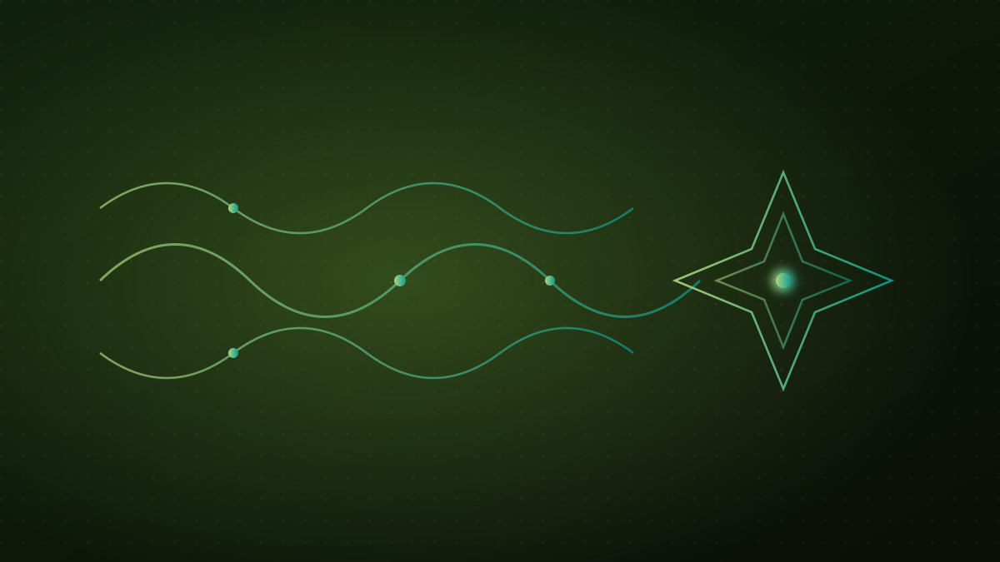

Neden Türkçe yapay zeka?

Yapay zeka konuşulurken sık atlanan bir gerçek var: en güçlü modellerin neredeyse tamamı, ağırlıklı olarak İngilizce metinle eğitiliyor. Bu, Türkçe konuşan 80 milyondan fazla insan için sessiz bir dezavantaj demek. EcoFluxion'ı kurarken çıkış noktamız da buydu.
“Bir teknolojinin değeri, ona en çok ihtiyaç duyanın ana dilinde işe yarayıp yaramadığıyla ölçülür.”
Türkçe neden “zor” bir dil?
Türkçe, yapay zeka açısından kendine özgü zorluklar barındırır:
- Eklemeli yapı: Tek bir köke onlarca ek gelebilir (“ev → evlerimizden”). Bu, kelime sayısını patlatır ve modeli zorlar.
- Söz dizimi farkı: Cümle kuruluşu İngilizce'den oldukça farklıdır.
- Az kaynak: Türkçe yüksek kaliteli, etiketli veri İngilizce kadar bol değildir.
- Alan dili: Hukuk, tıp, kamu gibi alanların Türkçe terminolojisi çok özeldir.
Genel bir model bu inceliklerde sıklıkla tökezler — özellikle de hukuk gibi hata payının düşük olması gereken alanlarda.
Bizim yaklaşımımız
EcoFluxion'da bu boşluğu üç katmanda kapatmaya çalışıyoruz:
- Türkçe'ye özel modeller: Genel bir modeli ödünç almak yerine, Türkçe ve Türkçe hukuk diline göre ince ayar yapılmış kendi dil modellerimizi eğitiyoruz.
- Gerçeğe demirleme: RAG ile cevapları gerçek Türkçe belgelere — mevzuat ve içtihada — bağlıyoruz.
- Ürünleştirme: Bunu bir araştırma demosu değil, hukuk profesyonelinin her gün açtığı bir ürüne dönüştürüyoruz: İçtiHub.
Neden bir “dert” meselesi?
Çünkü yapay zeka önümüzdeki on yılın altyapısı olacak. Eğer bu altyapı yalnızca İngilizce'de mükemmel çalışırsa, Türkçe konuşan bir avukat, bir öğrenci ya da bir memur hep ikinci sınıf bir deneyime razı olmak zorunda kalır. Biz buna razı değiliz. Hedefimiz, Türkçe konuşan herkesin ana dilinde güçlü, doğru ve güvenilir yapay zekaya erişebilmesi.
Türkçe yapay zeka bir lüks değil, bir gereklilik. Bu vizyonun nasıl bir şirkete ve ürünlere dönüştüğünü görmek için EcoFluxion'ın hikâyesi ve İçtiHub nedir? yazılarına göz atabilirsiniz.